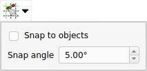

Sketcher Snap/ja
|
|
| Menu location |
|---|
| None |
| Workbenches |
| Sketcher |
| Default shortcut |
| None |
| Introduced in version |
| 0.21 |
| See also |
| Sketcher Grid |
Description
The  Sketcher Snap tool toggles snapping in all sketches. Individual snaps and settings can be changed in the related menu.
Sketcher Snap tool toggles snapping in all sketches. Individual snaps and settings can be changed in the related menu.
Snapping only works while creating geometry. Note that snapping is just a drawing aid, it does not produce additional constraints.
Usage
- Press the
 Toggle snap button to toggle snapping.
Toggle snap button to toggle snapping. - optionally click on the down arrow to the right of the button to open the menu. The settings in this menu can only be changed if snapping is switched on:
- If the Snap to grid checkbox is checked, the cursor will snap to grid lines and grid intersections. Snapping occurs if the distance of the cursor to a grid line is 20% of the grid spacing or less. Snapping also works if the grid is invisible.
- If the Snap to objects checkbox is checked, the cursor will snap to edges of geometry and midpoints of lines and arcs.
- Snap angle specifies the angle for angular snap. Snapping will occur at multiples of this value starting from the direction of the positive X axis of the sketch. The Ctrl key must be held down for this snap. Angular snap only works when creating certain geometry.
{kind=link}
- General: Create sketch, Edit sketch, Attach sketch, Reorient sketch, Validate sketch, Merge sketches, Mirror sketch, Leave sketch, View sketch, View section, Toggle grid, Toggle snap, Configure rendering order, Stop operation
- Sketcher geometries: Point, Polyline, Line, Arc, Arc by 3 points, Arc of ellipse, Arc of hyperbola, Arc of parabola, Circle, Circle by 3 points, Ellipse, Ellipse by 3 points, Rectangle, Centered rectangle, Rounded rectangle, Triangle, Square, Pentagon, Hexagon, Heptagon, Octagon, Regular polygon, Slot, Arc slot, B-spline by control points, Periodic B-spline by control points, B-spline by knots, Periodic B-spline by knots, Toggle construction geometry
- Sketcher constraints:
- Dimensional constraints: Dimension, Horizontal distance, Vertical distance, Distance, Auto radius/diameter, Radius, Diameter, Angle, Lock
- Geometric constraints: Coincident (unified), Coincident, Point on object, Horizontal/vertical, Horizontal, Vertical, Parallel, Perpendicular, Tangent or collinear, Equal, Symmetric, Block
- Other constraints: Refraction (Snell's law)
- Constraint tools: Toggle driving/reference constraint, Activate/deactivate constraint
- Sketcher tools: Fillet, Chamfer, Trim, Split, Extend, External geometry, Carbon copy, Select origin, Select horizontal axis, Select vertical axis, Array transform, Polar transform, Scale transform, Offset geometry, Symmetry, Remove axes alignment, Delete all geometry, Delete all constraints
- Sketcher B-spline tools: Convert geometry to B-spline, Increase B-spline degree, Decrease B-spline degree, Increase knot multiplicity, Decrease knot multiplicity, Insert knot, Join curves
- Sketcher visual: Select unconstrained DoF, Select associated constraints, Select associated geometry, Select redundant constraints, Select conflicting constraints, Show/hide circular helper for arcs, Show/hide B-spline degree, Show/hide B-spline control polygon, Show/hide B-spline curvature comb, Show/hide B-spline knot multiplicity, Show/hide B-spline control point weight, Show/hide internal geometry, Switch virtual space
- Additional: Sketcher Dialog, Preferences, Sketcher scripting
- Getting started
- Installation: Download, Windows, Linux, Mac, Additional components, Docker, AppImage, Ubuntu Snap
- Basics: About FreeCAD, Interface, Mouse navigation, Selection methods, Object name, Preferences, Workbenches, Document structure, Properties, Help FreeCAD, Donate
- Help: Tutorials, Video tutorials
- Workbenches: Std Base, Assembly, BIM, CAM, Draft, FEM, Inspection, Material, Mesh, OpenSCAD, Part, PartDesign, Points, Reverse Engineering, Robot, Sketcher, Spreadsheet, Surface, TechDraw, Test Framework
- Hubs: User hub, Power users hub, Developer hub